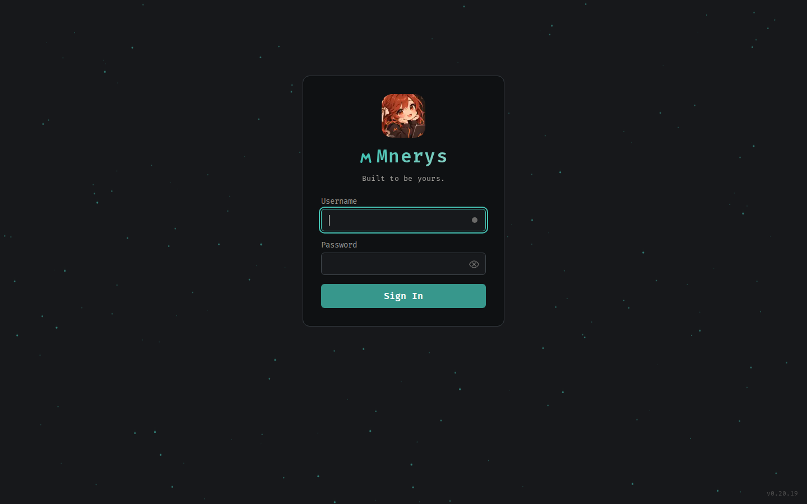

Chat and agents
Conversations, model selection, agent execution, and tool-assisted tasks, composed by the shared Agent Core.
Active Web pathA place for your conversations, models, tools, and knowledge—designed around one simple idea: software should adapt to you.
Mnerys is an independent, modular AI platform: a shared Python Agent Core and one authenticated Gateway power the Web and the mnerys CLI, with durable sessions, events, and approvals. The TUI is the next milestone.
M2 and M3 complete · Web and CLI on the shared Agent Core/Gateway · TUI planned
01 / THE WORKSPACE
The inherited workspace foundation is now owned by an independent Agent Core and Gateway. Web turns already run through the shared composition.
Conversations, model selection, agent execution, and tool-assisted tasks, composed by the shared Agent Core.
Active Web pathBuilt-in tools and optional MCP integrations, with server-side authorization, policies, and sealed approvals.
ImplementedDocuments, research, notes, and memory features that bring more of your work into one place.
ImplementedScheduled jobs and automations that share the same agent authority, with fenced session delivery.
ImplementedConnect configured local or remote model providers, with authorized fallback, without tying your workspace to one model family.
ImplementedThemes, modular integrations, and settings are the foundation for a more personal AI experience.
ImplementedThe Agent Core, Gateway, Web adapter and CLI are implemented and tested at the source level, with the Gateway and Web verified in the private preview. The TUI, Telegram, and other client adapters remain planned.
02 / A REAL LOOK
The current default visual theme is Eclipse: deep charcoal surfaces, teal highlights, and a subtle starfield. No invented product mockups here.

Mnerys has its own logo, visual identity, mascot, and architectural direction. The interface retains the themes people already use while Eclipse leads the experience.
03 / WHERE WE'RE HEADED
A unified platform, not three disconnected agents. The Gateway owns access, sessions, events, and permissions across every client; the Web adapter already runs on it.
Auth · sessions · events · permissions · approvals
Models · tools · MCP · skills · memory
04 / THE JOURNEY
An honest view of where Mnerys stands today. M1, M2 and M3 are complete; the TUI and Telegram are the next planned milestones.
Map the inherited runtime, define ownership and authorization boundaries, and establish the shared contracts.
One owner-admitted turn composition and a single authenticated control plane: the Web path runs through the shared Core, with durable session/turn/event/approval records, revision-fenced session writers, a versioned Gateway API v1, SQLite and PostgreSQL 17 support, and a verified rollout in the private preview (Web cutover active).
The mnerys command installs per user, runs authenticated turns against the shared Gateway (remote mode), boots the local runtime with serve (local mode), and manages profiles and credentials safely. Every release publishes a version-matched mnerys-cli wheel and sdist as GitHub Release assets. Read the CLI documentation.
An interactive terminal client with the same Gateway-authorized sessions and tools.
Telegram and other adapters, each reusing the same Gateway permissions without a parallel runtime.
YOUR WORKSPACE. YOUR RULES.
Mnerys keeps growing in the open: the shared Agent Core and Gateway are implemented, tested, and verified in the private preview. Follow the source and the roadmap, and help shape what comes next.